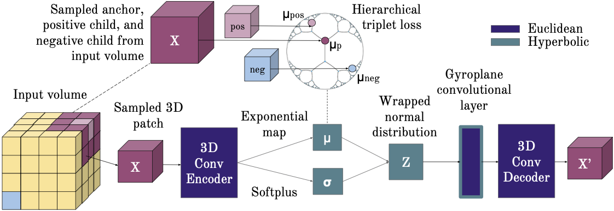

Capturing Implicit Hierarchical Structure in 3D Biomedical Images with Self-Supervised Hyperbolic Representations
NeurIPS 2021

Abstract
We consider the task of representation learning for unsupervised segmentation of 3D voxel-grid biomedical images. We show that models that capture implicit hierarchical relationships between subvolumes are better suited for this task. To that end, we consider encoder-decoder architectures with a hyperbolic latent space, to explicitly capture hierarchical relationships present in subvolumes of the data. We propose utilizing a 3D hyperbolic variational autoencoder with a novel gyroplane convolutional layer to map from the embedding space back to 3D images. To capture these relationships, we introduce an essential self-supervised loss -- in addition to the standard VAE loss -- which infers approximate hierarchies and encourages implicitly related subvolumes to be mapped closer in the embedding space. We present experiments on both synthetic data and biomedical data to validate our hypothesis.
Code release
We release code here.